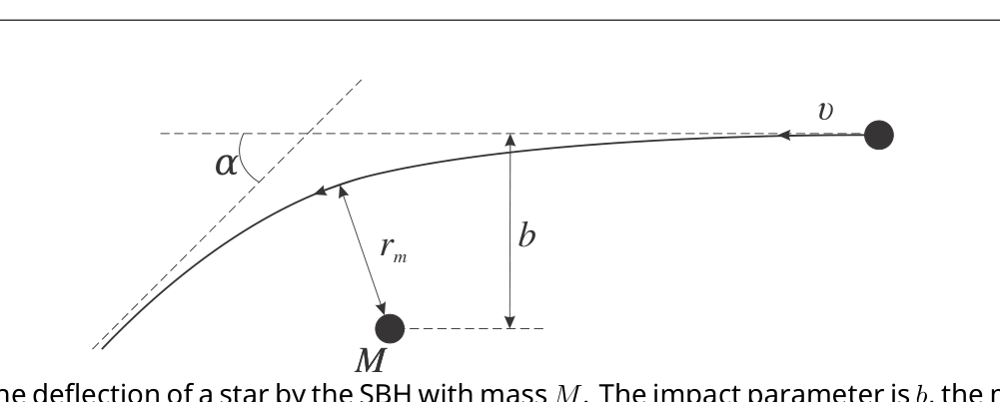
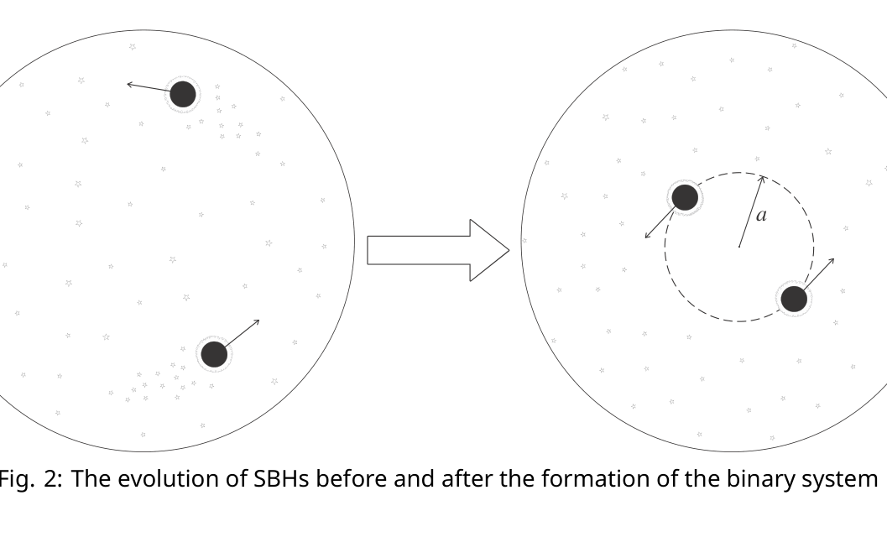

Vortices in superfluid
Introduction
Superfluidity is a property of flowing without friction. Everyday experience tells us that motion of an ordinary fluid (say, water at room temperature) is always accompanied by viscous dissipation of energy, so that the flow gradually becomes slower unless it is maintained by external forces. In contrast, superfluid exhibits no loss of kinetic energy: once excited the motion of superfluid can continue indefinitely. Superfluidity was originally discovered experimentally in liquid helium.
We study properties of superfluid helium at zero temperature. It will be treated as an incompressible fluid with density . Flow continuity (the fact that the mass flowing into and the mass flowing out of a given infinitesimal volume are equal) implies that the flux of helium velocity through a closed surface is always zero. Superfluid velocity in this aspect is analogous to the magnetic field intensity. By analogy with the magnetic field lines, “streamlines” are tangential to the fluid velocity at each point and their density is proportional to its magnitude.
True superflow has an important property of being irrotational: circulation of superfluid velocity along any closed path within helium is zero
\oint_L \vec{v} \cdot d\vec{l} = 0 \tag{1}
This statement must be amended if superfluidity is absent along a thin “vortex filament”. The thickness of the filament itself is of approximately atomic dimensions , but the vortex induces long range velocity field in surrounding superfluid: velocity circulation around such filament is the circulation quantum1
\left| \oint_L \vec{v} \cdot d\vec{l} \right| = 2\pi\kappa, \tag{2}
and zero if the path can be contracted to a single point without crossing the vortex, see Fig. 1. This supports the analogy between superflow and the magnetic field created by wires carrying current: superposition of two valid velocity distributions is a valid velocity distribution and the velocity at any point is equal (up to a dimensional factor) to the magnetic field produced by the unit currents running through a system of wires representing vortex filaments.
 Fig. 1: Vortex filament (red) in superfluid (light blue). Velocity circulations along paths , , , and are all zero, but those for and are equal to . Note that circulations along and have opposite signs.
Fig. 1: Vortex filament (red) in superfluid (light blue). Velocity circulations along paths , , , and are all zero, but those for and are equal to . Note that circulations along and have opposite signs.
Part A. Steady filament (0.75 points)
Consider a cylindrical beaker (radius ) of superfluid helium and a straight vertical vortex filament in its center Fig. 2.
A.1 (0.25pt) Plot the streamlines. Find out the velocity at a point .
A.2 (0.5pt) Work out the free surface shape (height as a function of coordinate ) around the vortex. Free fall acceleration is . Surface tension can be neglected.
 Fig. 2: Straight vortex along the axis of a beaker.
Fig. 2: Straight vortex along the axis of a beaker.
Part B. Vortex motion (1.4 points)
Free vortices move about in space with the flow2. In other words each element of the filament moves with the velocity of the fluid at the position of that element.
As an example, consider a pair of counter-rotating straight vortices placed initially at distance from each other, see Fig. 3. Each vortex produces velocity at the axis of another. As a result, the vortex pair moves rectilinearly with constant speed so that the distance between them remains unchanged.
 Fig. 3: Parallel vortex filaments with opposite circulations.
Fig. 3: Parallel vortex filaments with opposite circulations.
B.1 (0.25pt) Consider two identical straight vortices initially placed at distance from each other as shown in Fig. 4. Find initial velocities of the vortices and draw their trajectories.
 Fig. 4: Parallel vortex filaments with equal circulations.
Fig. 4: Parallel vortex filaments with equal circulations.
A beaker of helium (see Part A) is filled with triangular lattice () of identical vertical vortices, see Fig. 5.
 Fig. 5: Triangular lattice of vortices in a beaker. The view from above.
Fig. 5: Triangular lattice of vortices in a beaker. The view from above.
B.2 (0.15pt) Draw the trajectories of vortices A, B, and C (located in the center).
B.3 (0.4pt) Find velocity of a vortex positioned at .
B.4 (0.35pt) Find the distance between the vortices A and B at time . Treat as given.
B.5 (0.25pt) Work out the “smoothed out” (omitting the lattice structure) free helium surface shape .
Part C. Momentum and energy (1.75 points)
The long range velocity field is the major contribution to the energy of a system of vortices, it is insensitive to exact structure of the filament. The filament itself can not be properly described by the macroscopic theory and apparent singularities (infinities) are insignificant. Real physical quantities, such as the energy, of the region inside a thin tube of radius around the filament should be neglected. Outside of this tube the density of superflow kinetic energy (where ) is analogous to the energy density of the magnetic field — they are both quadratic in respective variables. This analogy together with the correspondence between magnetic field and superfluid velocity generated by vortices (currents) facilitates calculation of the flow energy for a given system. For instance, given the inductance of a circular wire loop , where is the loop radius and is wire radius, we get the superfluid vortex loop energy3
U \approx 2R\rho\pi^2\kappa^2 \log(R/a) \tag{3}
Total fluid momentum is also determined by the long range velocity distribution. It is obtained by integration of the momentum density . Again, consider a flow generated by a circular vortex loop placed in plane. It is obvious from the symmetry considerations, that total momentum has only component:
P = \int \rho v_z \, dV = \rho \int\!\!\int \underbrace{\left( \int v_z \, dz \right)}_{q(x,y)} dx\, dy \tag{4}
The innermost integration is in fact an integration along appropriate paths parallel to -axis, see Fig. 6. From the circulation identity (2) it follows that
q(x, y) = \int_{L(x,y)} \vec{v} \cdot d\vec{l} \tag{5}
is piecewise constant. Particularly, it is zero for paths passing outside the ring and for paths inside it. Total momentum is therefore
P = \rho \cdot \pi R^2 \cdot 2\pi\kappa = 2\pi^2\rho R^2\kappa \tag{6}
 Fig. 6: Velocity field of a circular vortex loop and integration paths (green) for calculation.
Fig. 6: Velocity field of a circular vortex loop and integration paths (green) for calculation.
 Fig. 7: A nearly rectangular vortex loop, .
Fig. 7: A nearly rectangular vortex loop, .
C.1 (0.3pt) Consider a nearly rectangular vortex loop , , Fig. 7. Indicate the direction of its momentum . Find out the momentum magnitude.
C.2 (0.7pt) Calculate its energy .
C.3 (0.75pt) Suppose we shift a long straight vortex filament by a distance in direction, see Fig. 8. How much does the fluid momentum change? Indicate the momentum change direction. The filament length (constrained by the vessel walls) is .
 Fig. 8: Momentum changes whenever the vortex shifts with respect to the fluid.
Fig. 8: Momentum changes whenever the vortex shifts with respect to the fluid.
Part D. Trapped charges (2.85 points)
Electrons, if injected in helium, get trapped in the vortex filaments. Here and below polarizability of helium can be neglected ().
 Fig. 9: Straight vortex in a uniform electric field.
Fig. 9: Straight vortex in a uniform electric field.
D.1 (0.5pt) Consider a straight vortex charged with uniform linear density in a uniform electric field . Draw the vortex trajectory. Find its velocity as a function of time.
A circular vortex loop of radius initially charged with uniform linear density is placed in a uniform electric field perpendicular to its plane, opposite to its momentum .
 Figure 10: (left) Vortex ring in a uniform electric field. (right) Cross section of the ring.
Figure 10: (left) Vortex ring in a uniform electric field. (right) Cross section of the ring.
D.2 (0.6pt) Draw the trajectory of the loop center . Find the radius of the loop as a function of time.
D.3 (1.5pt) Find its velocity as a function of time.
D.4 (0.25pt) The field is switched off at a time when the velocity reaches the value . Find the loop velocity at a later time .
Part E. Influence of the boundaries (3.25 points)
Solid walls alter the velocity field created by a vortex filament, because the fluid cannot flow through them. Mathematically this means that the wall-normal velocity component vanishes at the wall surface.
 Fig. 11: Straight vortex filament near a flat wall.
Fig. 11: Straight vortex filament near a flat wall.
E.1 (0.5pt) Draw the trajectory of a straight vortex, initially placed at a distance from a flat wall. Find its velocity as a function of time.
Consider a straight vortex placed in a corner at a distance from both walls.
 Fig. 12: Straight vortex filament in a corner.
Fig. 12: Straight vortex filament in a corner.
E.2 (0.75pt) What is the initial velocity of the vortex?
E.3 (0.5pt) Draw the trajectory of the vortex.
E.4 (1.5pt) What is the velocity of the vortex after very long time?
Fonte: Testo (PDF) — p.1
Topic: Fluid Mechanics, Modern-Quantum Physics Metodi: Continuity Equation, Symmetry Argument, Superposition Principle, Calculus-Integration Competenze: Physical Reasoning, Diagrammatic Reasoning Objects: Container, Electron
Vortici in superfluido
Introduzione
La superfluidità è una proprietà del flusso senza attrito. L’esperienza quotidiana ci dice che il movimento di un fluido ordinario (ad esempio, l’acqua a temperatura ambiente) è sempre accompagnato da una dissipazione viscosa dell’energia, in modo che il flusso diventa gradualmente più lento a meno che non venga mantenuto da forze esterne. Al contrario, il superfluido non presenta alcuna perdita di energia cinetica: una volta eccitato il movimento del superfluido può continuare indefinitamente. La superfluidità fu originariamente scoperta sperimentalmente nell’elio liquido.
Studiamo le proprietà dell’elio superfluido a temperatura zero. Sarà trattato come un fluido incompressibile con densità . La continuità di flusso (il fatto che la massa che entra e la massa che esce da un determinato volume infinitesimale siano uguali) implica che il flusso di velocità dell’elio attraverso una superficie chiusa è sempre zero. La velocità dei superfluidi in questo aspetto è analoga all’intensità del campo magnetico. Per analogia con le linee del campo magnetico, le “linee di corrente” sono tangenziali alla velocità del fluido a ogni punto e la loro densità è proporzionale alla sua grandezza.
Il vero superflow ha una proprietà importante di irrotazione: la circolazione della velocità superfluida lungo qualsiasi percorso chiuso all’interno dell’elio è zero
\oint_L \vec{v} \cdot d\vec{l} = 0 \tag{1}
Questa dichiarazione deve essere modificata se non vi è superfluidità lungo un sottile “filamento vortice”. Lo spessore del filamento stesso è di dimensioni atomiche circa , ma il vortice induce un campo di velocità a lungo raggio nel superfluido circostante: la circolazione di velocità intorno a tale filamento è il quantum di circolazione1
\left| \oint_L \vec{v} \cdot d\vec{l} \right| = 2\pi\kappa, \tag{2}
e zero se il percorso può essere contratto a un singolo punto senza attraversare il vortice, vedere figura. 1. Ciò supporta l’analogia tra superflow e campo magnetico creato da fili che trasportano corrente: la sovrapposizione di due distribuzioni di velocità valide è una distribuzione di velocità valida e la velocità in qualsiasi punto è uguale (fino a un fattore dimensionale) al campo magnetico prodotto dalle correnti unitarie che attraversano un sistema di fili che rappresentano filamenti di vortice.
Fig. 1: Filamento vortice (rosso) in superfluido (blu chiaro). Le velocità di circolazione lungo i percorsi , , e sono tutte zero, ma quelle per e sono uguali a . Si noti che le circolazioni lungo e presentano segni opposti.
Parte A. Filamento stabile (0,75 punti)
Si consideri un bicchiere cilindrico (radio ) di elio superfluido e un filamento verticale verticale retto nel suo centro Fig. 2.
**A.1 ** *(0.25pt) * Tracciare le linee correnti. Scopri la velocità in un punto .
A.2 *(0,5pt) * Calcolare la forma della superficie libera (altezza in funzione delle coordinate ) attorno al vortice. Accelerazione di caduta libera è . La tensione superficiale può essere trascurata.
Fig. 2: Vortice diretto lungo l’asse di un bicchiere.
Parte B. Movimento del vortice (1,4 punti)
I vortici liberi si muovono nello spazio con il flusso 2. In altre parole, ogni elemento del filamento si muove con la velocità del fluido nella posizione di tale elemento.
Ad esempio, si consideri un paio di vortici retti che ruotano contro di loro e sono posizionati inizialmente a distanza l’uno dall’altro, vedere figura. 3. Ogni vortice produce velocità all’asse di un altro. Di conseguenza, la coppia di vortici si muove rettolineare con velocità costante in modo che la distanza tra di loro rimanga invariata.
Fig. 3: Filamenti di vortice paralleli con circolazioni opposte.
B.1 *(0.25pt) * Considerate due vortici retti identici inizialmente posizionati a distanza tra loro come mostrato nella figura. 4. Trova le velocità iniziali dei vortici e disegna le loro traiettorie.
Fig. 4: Filamenti di vortice paralleli con circulazioni uguali.
Un calice di elio (vedere parte A) è riempito di reticola triangolare () di vortici verticali identici, vedere figura. 5.
Fig. 5: Rete triangolare di vortici in una tazza. La vista dall’alto.
**B.2 ** *(0.15pt) * Disegna le traiettorie dei vortici A, B e C (situati al centro).
**B.3 ** *(0,4pt) * Trova la velocità di un vortice posizionato a .
B.4 *(0.35pt) * Trova la distanza tra i vortici A e B al tempo . Trattare come indicato.
**B.5 ** *(0.25pt) * Lavorare la forma della superficie di elio libero “allentata” (omissione della struttura della griglia) .
Parte C. Impulso e energia (1,75 punti)
Il campo di velocità a lungo raggio è il contributo principale all’energia di un sistema di vortici, è insensibile alla struttura esatta del filamento. Il filamento stesso non può essere descritto correttamente dalla teoria macroscopica e le apparenti singolarità (infinità) sono insignificanti. Le quantità fisiche reali, come l’energia, della regione all’interno di un tubo sottile di raggio intorno al filamento devono essere trascurate. Al di fuori di questo tubo la densità di energia cinetica superfluo (dove ) è analoga alla densità di energia del campo magnetico entrambi sono quadratici nelle rispettive variabili. Questa analogia, insieme alla corrispondenza tra campo magnetico e velocità superfluida generata da vortici (torenti), facilita il calcolo dell’energia di flusso per un dato sistema. Ad esempio, data l’induzione di un ciclo di filo circolare , dove è il raggio del ciclo e è il raggio del filo, otteniamo l’energia del ciclo di vortice superfluido3
U \approx 2R\rho\pi^2\kappa^2 \log(R/a) \tag{3}
Il momento totale del fluido è determinato anche dalla distribuzione della velocità a lungo raggio. Si ottiene integrando la densità di impulso . Ancora una volta, consideriamo un flusso generato da un ciclo di vortice circolare posizionato in piano . Dalle considerazioni di simmetria è evidente che la dinamica totale ha solo :
P = \int \rho v_z \, dV = \rho \int\!\!\int \underbrace{\left( \int v_z \, dz \right)}_{q(x,y)} dx\, dy \tag{4}
L’integrazione più profonda è infatti un’integrazione lungo percorsi appropriati paralleli all’asse , vedi Figura. 6. Dall’identità di circolazione (2) si deduce che
q(x, y) = \int_{L(x,y)} \vec{v} \cdot d\vec{l} \tag{5}
è costante a pezzi. In particolare, è zero per i percorsi che passano al di fuori dell’anello e per i percorsi all’interno. L’impulso totale è quindi
P = \rho \cdot \pi R^2 \cdot 2\pi\kappa = 2\pi^2\rho R^2\kappa \tag{6}
Fig. 6: Campo di velocità di un ciclo di vortice circolare e percorsi di integrazione (verde) per il calcolo .
Fig. 7: Un ciclo di vortice quasi rettangolare, .
**C.1 ** *(0.3pt) * Considera un ciclo di vortice quasi rettangolare , , Figura. 7. Indicare la direzione della sua dinamica . Scopri la grandezza dell’impulso.
**C.2 ** *(0,7pt) * Calcolare la sua energia .
**C.3 ** *(0.75pt) * Supponiamo di spostare un lungo filamento di vortice retto di una distanza nella direzione , vedi Figura. 8. Quanto cambia il momento del fluido? Indicare la direzione di cambiamento di impulso. La lunghezza del filamento (constretta dalle pareti del recipiente) è .
Fig. 8: Il momento cambia ogni volta che il vortice si sposta rispetto al fluido.
Parte D. Cargos intrappolati (2,85 punti)
Gli elettroni, se iniettati in elio, rimangono intrappolati nei filamenti del vortice. Qui e sotto la polarizzazione dell’elio può essere trascurata ().
Fig. 9: Vortice diretto in un campo elettrico uniforme.
**D.1 ** *(0,5pt) * Considera un vortice retto caricato con densità lineare uniforme in un campo elettrico uniforme . Disegna la traiettoria del vortice. Trova la sua velocità come funzione del tempo.
Un ciclo di vortice circolare di raggio inizialmente carico di densità lineare uniforme è collocato in un campo elettrico uniforme perpendicolare al suo piano, opposto al suo impulso .
Figura 10: (a sinistra) Anello di vortice in un campo elettrico uniforme. (a destra) Sezione incrociata dell’anello.*
D.2 *(0.6pt) * Tracciare la traiettoria del centro del ciclo . Trova il raggio del ciclo come funzione del tempo.
**D.3 ** *(1.5pt) * Trova la sua velocità come funzione del tempo.
D.4 (0.25pt) Il campo viene spento al momento quando la velocità raggiunge il valore . Trova la velocità del ciclo in un momento successivo .
Parte E. Influenza dei confini (3,25 punti)
Le pareti solide alterano il campo di velocità creato da un filamento vortice, perché il fluido non può fluire attraverso di esse. Matematicamente questo significa che la componente della velocità normale della parete scompare alla superficie della parete.
Fig. 11: Filamento di vortice diretto vicino a una parete piatta.
**E.1 ** *(0.5pt) * Disegnare la traiettoria di un vortice retto, inizialmente posizionato a una distanza da una parete piatta. Trova la sua velocità come funzione del tempo.
Considerate un vortice retto posizionato in un angolo a una distanza da entrambe le pareti.
Fig. 12: Filamento di vortice diretto in un angolo.
**E.2 ** *(0.75pt) * Qual è la velocità iniziale del vortice?
**E.3 ** *(0.5pt) * Disegna la traiettoria del vortice.
**E.4 ** *(1.5pt) * Qual è la velocità del vortice dopo molto tempo?
Fonte: Testo (PDF) — p.1
Topic: Fluid Mechanics, Modern-Quantum Physics Metodi: Continuity Equation, Symmetry Argument, Superposition Principle, Calculus-Integration Competenze: Physical Reasoning, Diagrammatic Reasoning Objects: Container, Electron
Evolution of Supermassive Black Holes Binary
Introduction
The concept of gravitational waves is one of the most impressive predictions of Einstein’s Theory of General Relativity. Gravitational waves are the space-time ripples propagating with the speed of light similarly to electromagnetic waves. Direct detection of gravitational waves is incredibly difficult, however, the first signal was detected on September 14, 2015, by LIGO and VIRGO collaborations.
Gravitational waves are emitted during the rapid motion of massive objects. The most powerful source of gravitational waves is the merging of two Supermassive Black Holes (SBH). Black holes predicted by Theory of General Relativity represent extremely compact objects which might have very large masses. Other specific properties of black holes will not be needed in the solution of this problem.
In the generally accepted theory of galaxies’ evolution, it is supposed that there is SBH with the mass ranging from of Solar masses in the galaxy’s center. Galaxies are huge stellar systems containing stars. During their evolution, two galaxies can collide and merge into one. What happens to two SBHs initially located in their centers? The evolution of the SBH binary system can be divided into three main stages. At each stage SBHs approach each other, although the underlying physical phenomena differ. We will examine these phenomena separately in the first three parts of the problem. In the fourth part, we will use the obtained relations to calculate the total time of the SBH binary system evolution.
At the end of their evolution, two SBHs will eventually approach each other and merge into a single black hole. The merging process lasts about an hour and is accompanied by an intense burst of gravitational radiation. Future observatories like LISA will be able to detect this gravitational radiation. Still, the research on the SBH evolution is under way now, at the dawn of gravitational-wave astronomy.
General information
- Express all your numerical answers in parsecs (pc) for the distances and giga-years (Gy) for the time intervals. We will use Solar mass () as a reference mass. You might need these values:
-
When you encounter the word “estimate”, you are not demanded the exact answer. It is sufficient to obtain a result that differs from the accurate one, not more than by a factor of 10. On the contrary, when you encounter the word “find”, you are supposed to achieve the exact answer. The word “calculate” asks you to bring the numerical answer.
-
Throughout the problem, assume every star in the galaxy to have the same mass .
-
Throughout the problem we will not take into account the effects of the Theory of General Relativity except gravitational waves emission. All stars and black holes are considered as point masses governed by Newton’s gravitation law.
Part A. Dynamic Friction (1.6 points)
In this part we shall study the simplified model of the galaxy. You can ignore the velocities of the stars in the galaxy and assume the constant stellar concentration . The characteristic size of the galaxy is . The stellar concentration is small enough, so the stellar collisions are extremely rare and negligible. Let us consider a SBH with the mass moving with the velocity through the galaxy. Surprisingly, the SBH experiences nonzero average force from the stars. This force slows the motion of the SBH and is called the force of dynamical friction for this reason. This part is devoted to the determination of this force.
A.1 (0.75pt) Let us work in the SBH’s reference frame and consider the transit of one star with impact parameter (fig. 1). Assume that
b \gg b_1 = \frac{GM}{v^2}. \tag{1}
The angular deflection of the star , where is some coefficient. Find the value of . If you cannot find , assume hereafter.

Fig. 1: The deflection of a star by the SBH with mass . The impact parameter is , the minimal distance between the star and the SBH is .A.2 (0.25pt) Let axis be directed along the SBH’s velocity. Find the momentum component transferred from the star to the SBH.
A.3 (0.4pt) Estimate the average force acting on the SBH by taking the average over impact parameter . Neglect the contribution of the stars with impact parameters . Assume the SBH to reside in the central part of a galaxy. Express in terms of , , , and stellar density .
A.4 (0.2pt) As you obtained in the previous task, the expression for includes the factor , which we will denote further as . Calculate the value of for , and velocity km/s.
Part B. Gravitational slingshot (3.0 points)
In this part, we will consider the system of two SBHs with equal masses located in the center of the galaxy. Let’s call this system a SBH binary. We will assume that there are no stars near the SBH binary, each SBH has a circular orbit of radius in the gravitational field of another SBH.
B.1 (0.25pt) Find the orbital velocity of each SBH. Find the total energy of the SBH binary. Express it in terms of , and .
There are a lot of stars at distances much larger than from the binary. Stars travel along complex and diverse trajectories in the gravitational field of the whole galaxy. The motion of the stars can be considered chaotic, like the motion of the molecules in an ideal gas. Let us assume that stars’ velocities have equal magnitudes and their average mass density is . In this case dynamical friction is no longer affecting the SBH binary and energy losses are caused by other phenomenon.
B.2 (0.5pt) Let us solve a related problem. Let a star of mass transit by a point mass being at rest. The minimal distance between the star and the point during the transit is . The velocity of the star at large distance is . Find the exact value of impact parameter .
If a star approaches the SBH binary for a distance about , it participates in a complex 3-body interaction with the binary that almost always results in a star being shot out with the velocity about (the velocity of the star at the large distance after interaction). We will call such a strong interaction a collision of a star with the SBH binary. Acceleration and the shot of the star after the collision is called “gravitational slingshot”.
B.3 (1.0pt) Estimate the characteristic time between two successive collisions of the SBH binary with stars. Take into account that .
B.4 (0.25pt) Estimate the SBH binary energy loss rate . Estimate the radius variation rate . Express it in terms of , , , .
B.5 (1.0pt) Let us denote the initial radius of the system as . Estimate the time for the radius to decrease by a factor of 2 due to “gravitational slingshot”. Calculate for km/s, pc, .
Part C. Emission of gravitational waves (1.0 points)
In this part we shall study the SBH binary with equal masses which doesn’t interact with the stars. Even in this case the system loses the energy due to gravitational waves emission. The energy loss rate due to gravitational waves is
\frac{dE}{dt} = -\frac{1024}{5} \frac{G}{c^5} (\omega^3 I)^2, \tag{2}
where is angular velocity of the binary, and is quadrupole moment of the system.
C.1 (0.2pt) Find the SBH binary radius variation rate due to the emission of gravitational waves.
When the orbit radius of the SBH binary becomes close to the gravitational radius of the black hole:
r_g = \frac{2GM}{c^2}, \tag{3}
two SBHs quickly merge.
C.2 (0.7pt) Let us denote the initial radius of the system as . Estimate the time it takes for the SBH binary to shrink to the radius about due to the emission of gravitational waves. Express as a function of , , and .
C.3 (0.1pt) Calculate the initial radius of the binary of SBHs with equal masses if it takes it the age of the Universe to merge: .
Part D. Full evolution (4.4 points)
In this part we will use the results obtained above. Let us consider the real astrophysical situation. Two galaxies having SBH of mass in their centers merged into a new stellar system. Let the new galaxy be spherically symmetrical with radius pc. Let us assume that stellar density varies with radius to the galaxy center as
\rho(r) = \frac{\sigma^2}{4\pi G r^2}, \tag{4}
where km/s.
D.1 (0.25pt) Let the body move in circular orbit of radius in gravitational field of the stars. Neglect the force of dynamical friction and find the velocity of the body.
Immediately after the merging of galaxies two SBHs have arbitrary positions inside the new galaxy and do not affect each other. Let’s consider one SBH. We assume it moves in a circular orbit of radius around the galaxy center and slowly loses energy due to the dynamical friction.
D.2 (0.75pt) Estimate the orbit radius variation rate . In part A we ignored the velocities of the stars. Although stars are moving in the real galaxy, not all of them have exactly the same speed . Instead, the speed of the stars is only of the order of , and so is the relative speed of SBH with respect to the stars, hence you can use the result obtained in A.3 for estimation. You should use the density from equation (4). Assume to be a constant calculated in A.4.
After a certain time, two SBH will approach the center of the galaxy. Let two SBH move in a circular orbit of radius around the center galaxy in the gravitational field of the stars.
D.3 (0.3pt) Estimate the critical radius at which gravitational interaction between two SBHs is no longer negligible and calculate it. We will say that at this moment two SBHs form a binary system (fig. 2).

Fig. 2: The evolution of SBHs before and after the formation of the binary systemD.4 (0.75pt) Let us assume that after the merging of galaxies two SBHs were at distances pc from the galaxy center. Calculate the time it takes for two SBH to form a binary due to dynamical friction.
After forming the binary, two SBHs shoot away all the stars from the center of the galaxy and stay there alone. Since this moment, dynamical friction becomes ineffective and the binary starts to lose the energy because of the slingshot effect. You can assume that the velocities of the stars around the binary are and the stellar density is from the equation (4). Slingshot effect shrinks the radius of the system drastically and after some time the system starts to lose energy mostly due to the radiation of gravitational waves.
D.5 (0.3pt) When the binary radius is less than some value the energy loss is caused by gravitational waves emission. Estimate the value and calculate it.
D.6 (1.75pt) Estimate the time of the binary radius reduction from to (the slingshot stage). Estimate the time of binary radius reduction from to almost zero (the stage of gravitational waves emission).
D.7 (0.3pt) For the parameters given above, calculate the total time of two SBH evolution from galaxies merging to SBH merging.
Historical remark. For a long time astrophysicists have been thinking the SBH binary evolution stops at the slingshot stage, since the binary has shot out all the stars with small impact parameters which might collide with it. It appeared that two SBH would never merge. This fact was called the final parsec problem.
Real galaxies have complicated asymmetric shapes. Few years ago it was found that in galaxies of complex shapes the stars with small impact parameters appear again and again. The SBH binary continues to lose energy, but slower than our estimation gives. The final parsec problem was successfully solved.
Fonte: Testo (PDF) — p.1
Topic: Astrophysics, Gravitation Metodi: Newton’s Law of Gravitation, Kepler’s Laws, Order-of-Magnitude Estimation, Energy Conservation Method Competenze: Estimation & Approximation, Physical Reasoning Objects: Black Hole, Star
Evoluzione di un sistema binario di buchi neri supermassicci
Introduzione
Il concetto di onde gravitazionali è una delle previsioni più straordinarie della Teoria della Relatività Generale di Einstein. Le onde gravitazionali sono increspature dello spazio-tempo che si propagano alla velocità della luce, in modo analogo alle onde elettromagnetiche. La rivelazione diretta delle onde gravitazionali è incredibilmente difficile, tuttavia il primo segnale fu rivelato il 14 settembre 2015 dalle collaborazioni LIGO e VIRGO.
Le onde gravitazionali sono emesse durante il moto rapido di oggetti massicci. La sorgente più potente di onde gravitazionali è la fusione di due buchi neri supermassicci (SBH). I buchi neri previsti dalla Teoria della Relatività Generale rappresentano oggetti estremamente compatti che possono avere masse molto grandi. Altre proprietà specifiche dei buchi neri non saranno necessarie nella soluzione di questo problema.
Nella teoria comunemente accettata dell’evoluzione delle galassie, si suppone che vi sia un SBH con massa compresa tra masse solari al centro della galassia. Le galassie sono enormi sistemi stellari contenenti stelle. Durante la loro evoluzione, due galassie possono collidere e fondersi in una sola. Che cosa accade ai due SBH inizialmente situati nei loro centri? L’evoluzione del sistema binario di SBH può essere divisa in tre stadi principali. In ciascuno stadio i SBH si avvicinano l’uno all’altro, sebbene i fenomeni fisici sottostanti differiscano. Esamineremo questi fenomeni separatamente nelle prime tre parti del problema. Nella quarta parte, useremo le relazioni ottenute per calcolare il tempo totale dell’evoluzione del sistema binario di SBH.
Al termine della loro evoluzione, i due SBH finiranno per avvicinarsi l’uno all’altro e fondersi in un unico buco nero. Il processo di fusione dura circa un’ora ed è accompagnato da un’intensa esplosione di radiazione gravitazionale. Osservatori futuri come LISA saranno in grado di rivelare questa radiazione gravitazionale. Tuttavia, la ricerca sull’evoluzione dei SBH è ancora in corso, agli albori dell’astronomia delle onde gravitazionali.
Informazioni generali
- Esprimere tutte le risposte numeriche in parsec (pc) per le distanze e in giga-anni (Gy) per gli intervalli di tempo. Useremo la massa solare () come massa di riferimento. Potrebbero servire questi valori:
-
Quando si incontra la parola “stima”, non è richiesta la risposta esatta. È sufficiente ottenere un risultato che differisca da quello accurato non più di un fattore 10. Al contrario, quando si incontra la parola “trova”, si deve ottenere la risposta esatta. La parola “calcola” richiede di fornire la risposta numerica.
-
Nell’intero problema, assumere che ogni stella nella galassia abbia la stessa massa .
-
Nell’intero problema non terremo conto degli effetti della Teoria della Relatività Generale, eccetto l’emissione di onde gravitazionali. Tutte le stelle e i buchi neri sono considerati masse puntiformi governate dalla legge di gravitazione di Newton.
Parte A. Attrito dinamico (1.6 punti)
In questa parte studieremo il modello semplificato della galassia. Si possono trascurare le velocità delle stelle nella galassia e assumere costante la concentrazione stellare . La dimensione caratteristica della galassia è . La concentrazione stellare è sufficientemente piccola, per cui le collisioni stellari sono estremamente rare e trascurabili. Consideriamo un SBH con massa che si muove con velocità attraverso la galassia. Sorprendentemente, il SBH subisce una forza media non nulla da parte delle stelle. Questa forza rallenta il moto del SBH e per questo motivo è chiamata forza di attrito dinamico. Questa parte è dedicata alla determinazione di questa forza.
A.1 (0.75pt) Lavoriamo nel sistema di riferimento del SBH e consideriamo il transito di una stella con parametro d’impatto (fig. 1). Assumere che
b \gg b_1 = \frac{GM}{v^2}. \tag{1}
La deflessione angolare della stella è , dove è un certo coefficiente. Trovare il valore di . Se non si riesce a trovare , assumere d’ora in avanti.
Fig. 1: La deflessione di una stella da parte del SBH con massa . Il parametro d’impatto è , la distanza minima tra la stella e il SBH è .
A.2 (0.25pt) Sia l’asse diretto lungo la velocità del SBH. Trovare la componente della quantità di moto trasferita dalla stella al SBH.
A.3 (0.4pt) Stimare la forza media agente sul SBH mediando sul parametro d’impatto . Trascurare il contributo delle stelle con parametro d’impatto . Assumere che il SBH risieda nella parte centrale di una galassia. Esprimere in termini di , , , e densità stellare .
A.4 (0.2pt) Come ottenuto nel compito precedente, l’espressione per include il fattore , che indicheremo d’ora in avanti con . Calcolare il valore di per , e velocità km/s.
Parte B. Fionda gravitazionale (3.0 punti)
In questa parte, considereremo il sistema di due SBH con masse uguali situati al centro della galassia. Chiamiamo questo sistema un binario di SBH. Assumeremo che non vi siano stelle in prossimità del binario di SBH, che ciascun SBH abbia un’orbita circolare di raggio nel campo gravitazionale dell’altro SBH.
B.1 (0.25pt) Trovare la velocità orbitale di ciascun SBH. Trovare l’energia totale del binario di SBH. Esprimerla in termini di , e .
Vi sono molte stelle a distanze molto maggiori di dal binario. Le stelle viaggiano lungo traiettorie complesse e diverse nel campo gravitazionale dell’intera galassia. Il moto delle stelle può essere considerato caotico, come il moto delle molecole in un gas ideale. Assumiamo che le velocità delle stelle abbiano modulo uguale e che la loro densità di massa media sia . In questo caso l’attrito dinamico non influenza più il binario di SBH e le perdite di energia sono causate da un altro fenomeno.
B.2 (0.5pt) Risolviamo un problema correlato. Sia una stella di massa in transito accanto a una massa puntiforme in quiete. La distanza minima tra la stella e il punto durante il transito è . La velocità della stella a grande distanza è . Trovare il valore esatto del parametro d’impatto .
Se una stella si avvicina al binario di SBH per una distanza dell’ordine di , partecipa a una complessa interazione a 3 corpi con il binario che quasi sempre si risolve con l’espulsione della stella con velocità dell’ordine di (la velocità della stella a grande distanza dopo l’interazione). Chiameremo tale forte interazione una collisione di una stella con il binario di SBH. L’accelerazione e l’espulsione della stella dopo la collisione sono chiamate “fionda gravitazionale”.
B.3 (1.0pt) Stimare il tempo caratteristico tra due collisioni successive del binario di SBH con le stelle. Tenere conto che .
B.4 (0.25pt) Stimare il tasso di perdita di energia del binario di SBH . Stimare il tasso di variazione del raggio . Esprimerlo in termini di , , , .
B.5 (1.0pt) Indichiamo con il raggio iniziale del sistema. Stimare il tempo affinché il raggio si dimezzi a causa della “fionda gravitazionale”. Calcolare per km/s, pc, .
Parte C. Emissione di onde gravitazionali (1.0 punti)
In questa parte studieremo il binario di SBH con masse uguali che non interagisce con le stelle. Anche in questo caso il sistema perde energia a causa dell’emissione di onde gravitazionali. Il tasso di perdita di energia dovuto alle onde gravitazionali è
\frac{dE}{dt} = -\frac{1024}{5} \frac{G}{c^5} (\omega^3 I)^2, \tag{2}
dove è la velocità angolare del binario e è il momento di quadrupolo del sistema.
C.1 (0.2pt) Trovare il tasso di variazione del raggio del binario di SBH dovuto all’emissione di onde gravitazionali.
Quando il raggio orbitale del binario di SBH diventa prossimo al raggio gravitazionale del buco nero:
r_g = \frac{2GM}{c^2}, \tag{3}
i due SBH si fondono rapidamente.
C.2 (0.7pt) Indichiamo con il raggio iniziale del sistema. Stimare il tempo necessario affinché il binario di SBH si contragga fino al raggio dell’ordine di a causa dell’emissione di onde gravitazionali. Esprimere come funzione di , , e .
C.3 (0.1pt) Calcolare il raggio iniziale del binario di SBH con masse uguali se impiega l’età dell’Universo per fondersi: .
Parte D. Evoluzione completa (4.4 punti)
In questa parte useremo i risultati ottenuti sopra. Consideriamo la situazione astrofisica reale. Due galassie aventi un SBH di massa nei loro centri si sono fuse in un nuovo sistema stellare. Sia la nuova galassia a simmetria sferica con raggio pc. Assumiamo che la densità stellare vari con il raggio rispetto al centro della galassia come
\rho(r) = \frac{\sigma^2}{4\pi G r^2}, \tag{4}
dove km/s.
D.1 (0.25pt) Sia il corpo in moto su un’orbita circolare di raggio nel campo gravitazionale delle stelle. Trascurare la forza di attrito dinamico e trovare la velocità del corpo.
Immediatamente dopo la fusione delle galassie i due SBH hanno posizioni arbitrarie all’interno della nuova galassia e non si influenzano a vicenda. Consideriamo un SBH. Assumiamo che si muova su un’orbita circolare di raggio attorno al centro della galassia e perda lentamente energia a causa dell’attrito dinamico.
D.2 (0.75pt) Stimare il tasso di variazione del raggio orbitale . Nella parte A abbiamo trascurato le velocità delle stelle. Sebbene le stelle si muovano nella galassia reale, non tutte hanno esattamente la stessa velocità . Piuttosto, la velocità delle stelle è solo dell’ordine di , e così pure la velocità relativa del SBH rispetto alle stelle, quindi si può usare il risultato ottenuto in A.3 per la stima. Si deve usare la densità dell’equazione (4). Assumere costante e pari a quello calcolato in A.4.
Dopo un certo tempo, i due SBH si avvicineranno al centro della galassia. Siano i due SBH in moto su un’orbita circolare di raggio attorno al centro della galassia nel campo gravitazionale delle stelle.
D.3 (0.3pt) Stimare il raggio critico al quale l’interazione gravitazionale tra i due SBH non è più trascurabile e calcolarlo. Diremo che in questo momento i due SBH formano un sistema binario (fig. 2).
Fig. 2: L’evoluzione dei SBH prima e dopo la formazione del sistema binario
D.4 (0.75pt) Assumiamo che dopo la fusione delle galassie i due SBH fossero a distanze pc dal centro della galassia. Calcolare il tempo necessario affinché i due SBH formino un binario a causa dell’attrito dinamico.
Dopo aver formato il binario, i due SBH espellono tutte le stelle dal centro della galassia e vi restano da soli. Da questo momento, l’attrito dinamico diventa inefficace e il binario inizia a perdere energia a causa dell’effetto fionda. Si può assumere che le velocità delle stelle attorno al binario siano e la densità stellare sia dell’equazione (4). L’effetto fionda riduce drasticamente il raggio del sistema e dopo un certo tempo il sistema inizia a perdere energia principalmente a causa della radiazione di onde gravitazionali.
D.5 (0.3pt) Quando il raggio del binario è inferiore a un certo valore la perdita di energia è causata dall’emissione di onde gravitazionali. Stimare il valore di e calcolarlo.
D.6 (1.75pt) Stimare il tempo di riduzione del raggio del binario da ad (lo stadio della fionda). Stimare il tempo di riduzione del raggio del binario da fino a quasi zero (lo stadio dell’emissione di onde gravitazionali).
D.7 (0.3pt) Per i parametri forniti sopra, calcolare il tempo totale dell’evoluzione dei due SBH dalla fusione delle galassie alla fusione dei SBH.
Nota storica. Per lungo tempo gli astrofisici hanno pensato che l’evoluzione del binario di SBH si arrestasse allo stadio della fionda, poiché il binario ha espulso tutte le stelle con piccoli parametri d’impatto che avrebbero potuto collidere con esso. Sembrava che i due SBH non si sarebbero mai fusi. Questo fatto fu chiamato il problema del parsec finale.
Le galassie reali hanno forme asimmetriche complicate. Pochi anni fa si è scoperto che nelle galassie di forma complessa le stelle con piccoli parametri d’impatto ricompaiono di continuo. Il binario di SBH continua a perdere energia, ma più lentamente di quanto dia la nostra stima. Il problema del parsec finale fu risolto con successo.
Fonte: Testo (PDF) — p.1
Topic: Astrophysics, Gravitation Metodi: Newton’s Law of Gravitation, Kepler’s Laws, Order-of-Magnitude Estimation, Energy Conservation Method Competenze: Estimation & Approximation, Physical Reasoning Objects: Black Hole, Star
Space Debris
Introduction
In more than half a century of space operations quite a large number of man-made objects have been amassed near Earth. The objects that do not serve any particular purpose are called space debris. The most attention is usually paid to the larger debris objects, i.e. defunct satellites and spent rocket upper stages, which stay in orbit after delivering their payload. Collisions of such objects with each other may result in thousands of fragments endangering all current space missions.
There is a well-known hypothetical scenario, according to which certain collisions may cause a cascade where each subsequent collision generates more space debris that increase the likelihood of new collisions. Such a chain reaction, resulting in the loss of all near-Earth satellites and making impossible further space programs, is called the Kessler syndrome.
To prevent such undesirable outcome special missions are planned to remove large debris object from their present orbits either by tugging them to the Earth’s atmosphere or to graveyard orbits. To this end a specially designed spacecraft – a space tug – must capture a debris object. However, before capturing an uncontrolled object it is important to understand its rotational dynamics.
We suggest you to take part in planning of such a mission and find out how the rotational dynamics of a debris object changes in time under the influence of different factors.
Rocket Stage Schematic
The debris object to be considered is a “Kerbodyne 42” rocket upper stage, whose schematic is shown in Fig. 1. The circle line in Fig. 1 marks the outline of a spherical fuel tank.
 Fig. 1: “Kerbodyne 42” upper stage
Fig. 1: “Kerbodyne 42” upper stage
We introduce a body-fixed reference frame with the origin in the center of mass , being the symmetry axis of the stage, and perpendicular to . The inertia moments with respect to and axes are and ().
Part A. Rotation (3.8 points)
Consider an arbitrary initial rotation of the stage with angular momentum (Fig. 2), where is the angle between the symmetry axis and the direction of angular momentum. Fuel tank at this point is assumed to be empty. No forces or torques act upon the stage.
 Fig. 2: Rocket stage rotation
Fig. 2: Rocket stage rotation
A.1 (0.2pt) Find the projections of angular velocity on and , given that for material symmetry axes and with unit vectors and . Provide the answer in terms of , angle , and inertia moments , .
A.2 (0.4pt) Find the rotational energy associated with rotation and associated with rotation . Find total rotational kinetic energy of the stage as a function of the angular momentum and .
In the following questions of Section A consider the stage’s free rotation with the initial angular momentum and .
A.3 (1.2pt) Let us denote by the initial orientation of the stage’s symmetry axis with respect to inertial reference frame. Using conservation laws find the maximum angle , which the stage’s symmetry axis makes with during the stage’s free rotation.
Note: Since there are no external torques acting upon the stage, the angular momentum vector remains constant.
 Fig. 3: Precession
Fig. 3: Precession
Let us now introduce the reference frame with along the constant angular momentum vector (Fig. 3). This reference frame rotates about in such a way, that the stage’s symmetry axis always belongs to the plane.
A.4 (2.0pt) Given , , and inertia moments , , find the angular velocity of the reference frame about and direction and absolute value of angular velocity of the stage relative to the reference frame as functions of time. Provide the answer for direction in terms of angle it makes with the symmetry axis .
Note: angular velocity vectors are additive .
Part B. Transient Process (1.6 points)
Most of the propellant is used during the ascent, however, after the payload has been separated from the stage, there still remains some fuel in its tank. Mass of residual fuel is negligible in comparison to the stage’s mass . Sloshing of the liquid fuel and viscous friction forces in the fuel tank result in energy losses, and after a transient process of irregular dynamics the energy reaches its minimum.
B.1 (0.6pt) Find the value of angle after the transient process for arbitrary initial values of and .
Angle between the stage’s angular velocity and the symmetry axis
B.2 (0.6pt) Calculate the value of angular velocity after the transient process, given that initial angular velocity makes an angle of with the stage’s symmetry axis. The moments of inertia are and .
Part C. Magnetic Field (4.6 points)
Another important factor in rotational dynamics of a debris rocket stage, which is orbiting the Earth, is its interaction with the Earth’s magnetic field. Let us first consider an auxiliary problem.
Torque due to Eddy Currents
Let us place a thin-walled nonmagnetic spherical shell with wall thickness and radius in a uniform magnetic field , which slowly changes so that its derivative is a constant vector making angle with the direction of (Fig. 4). Electrical resistivity of the shell’s material is .
 Fig. 4: Spherical shell in magnetic field
Fig. 4: Spherical shell in magnetic field
C.1 (1.0pt) Find the induced magnetic moment of the shell, neglecting its self-inductance. Provide the answer for in the form of projections on (see Fig. 4).
C.2 (0.3pt) Find the torque acting on the spherical shell. Provide the answer for in the form of projections on (see Fig. 4).
Attitude Motion Evolution in the Earth’s Magnetic Field
Let us find out how the rotation changes for a rocket stage, which moves in a circular polar orbit with orbital period (Fig. 5). It transpires that the characteristic times of dynamics due to interaction with the geomagnetic field are much greater than the duration of the transient process. We will now study what happens to the rocket stage after the transient process has completed. To start our analysis consider the stage rotating with angular velocity about the axis perpendicular to the orbital plane.
 Fig. 5: The orbit
Fig. 5: The orbit
C.3 (0.4pt) The Earth’s magnetic field can be modeled as the magnetic field of a point dipole in the Earth’s center. Its dipole moment is directed opposite to axis. The absolute value of the Earth’s magnetic field at the point where the orbit crosses the equatorial plane is . Find at a current position of the stage in the orbit defined by the angle as shown in Fig. 5. The positive direction of is along with the orbital motion. Provide the answer in the form of the projections of on .
Note: It may facilitate subsequent calculations if projections of are given as functions of instead of .
Note: Magnetic field of a dipole at point is given by
\vec{B} = \frac{\mu_0}{4\pi} \left( \frac{3(\vec{\mu} \cdot \vec{r})\vec{r}}{r^5} - \frac{\vec{\mu}}{r^3} \right). \tag{1}
The “Kerbodyne 42” rocket upper stage is mostly made of wood, and the only conductive material is used for its cryogenic fuel tank. We, therefore, consider the stage’s interaction with the geomagnetic field as that of the spherical shell with wall thickness mm, radius m and resistivity .
C.4 (1.3pt) Find the torque acting on the stage, as it rotates about the axis perpendicular to the orbital plane with angular velocity collinear to . Provide the answer in the form of the projections of on .
C.5 (1.0pt) Find the absolute value of angular velocity as a function of time, given that the change in the stage’s angular velocity over one orbital period is negligibly small.
C.6 (1.0pt) Find the ratio of the orbital period and the rocket stage’s rotation period in the steady-state regime, which sets in after a long time.
Fonte: Testo (PDF) — p.1
Topic: Rotational Dynamics, Electromagnetic Induction Metodi: Torque & Angular Momentum Analysis, Conservation Laws, Faraday’s Law of Induction, Lorentz Force Analysis Competenze: Physical Reasoning, Mathematical Modeling Objects: Satellite, Magnetic Dipole
Detriti spaziali
Introduzione
In oltre mezzo secolo di operazioni spaziali si sono accumulati vicino alla Terra un gran numero di oggetti artificiali. Gli oggetti che non servono a uno scopo particolare sono chiamati detriti spaziali. Di solito la maggior attenzione è rivolta agli oggetti di detriti più grandi, cioè satelliti non funzionanti e le fasi superiori dei razzi usati, che restano in orbita dopo la consegna del carico utile. Le collisioni di tali oggetti tra loro possono portare a migliaia di frammenti che mettono in pericolo tutte le missioni spaziali attuali.
C’è un noto scenario ipotetico, secondo il quale alcune collisioni possono causare una cascata in cui ogni collisione successiva genera più detriti spaziali che aumentano la probabilità di nuove collisioni. Tale reazione a catena, che porta alla perdita di tutti i satelliti vicini alla Terra e rende impossibili ulteriori programmi spaziali, è chiamata sindrome di Kessler.
Per prevenire tali risultati indesiderati, sono previste missioni speciali per rimuovere grandi detriti da orbite attuali, attirandoli nell’atmosfera terrestre o in orbite cimiteri. Per questo motivo, una nave spaziale appositamente progettata un reggiseno spaziale deve catturare un oggetto di detriti. Tuttavia, prima di catturare un oggetto non controllato è importante comprendere la sua dinamica di rotazione.
Ti suggeriamo di partecipare alla pianificazione di una missione del genere e scoprire come la dinamica di rotazione di un oggetto di detriti cambia nel tempo sotto l’influenza di diversi fattori.
Schema di scena del razzo
L’oggetto di detriti da considerare è un razzo “Kerbodyne 42” di livello superiore, il cui schema è mostrato nella figura. 1. La linea del cerchio in Fig. 1 segna la struttura di un serbatoio di combustibile sferico.
Fig. 1: “Kerbodyne 42” fase superiore
Introduciamo un quadro di riferimento fisso a corpo con l’origine nel centro di massa , essendo l’asse di simmetria dello stadio, e perpendicolare a . I momenti di inerzia rispetto agli assi e sono e ().
Parte A. Rotation (3,8 punti)
Considerare una rotazione iniziale arbitraria della fase con impulso angolare (Fig. 2), dove è l’angolo tra l’asse di simmetria e la direzione del momento angolare. Si presume che il serbatoio di carburante sia vuoto. Nessuna forza o coppia agiscono sul palco.
Fig. 2: rotazione di fase del razzo
A.1 *(0.2pt) * Trova le proiezioni della velocità angolare su e , dato che per gli assi di simmetria materiale e con vettori unitari e . Fornire la risposta in termini di , angolo e momenti di inerzia , .
A.2 *(0.4pt) * Trova l’energia di rotazione associata alla rotazione e associata alla rotazione . Trova l’energia cinetica di rotazione totale dello stadio in funzione del momento angolare e .
Le domande di cui alla sezione A riportate in appresso presentano la rotazione libera della fase con il momento angolare iniziale e .
**A.3 ** *(1.2pt) * Indichiamo con l’orientamento iniziale dell’asse di simmetria della fase rispetto al quadro di riferimento inerziale. Usando le leggi di conservazione, si trova l’angolo massimo , che l’asse di simmetria dello stadio fa con durante la rotazione libera dello stadio.
Nota: poiché non ci sono coppie esterne che agiscono sul palco, il vettore di momentum angolare rimane costante.
Fig. 3: Precessione
Introducendo ora il quadro di riferimento con lungo il vettore di momentum angolare costante (Fig. 3). Questo quadro di riferimento ruota intorno a in modo tale che l’asse di simmetria della scena appartiene sempre al piano .
A.4 *(2.0pt) * Dati , e momenti di inerzia , , si trova la velocità angolare del quadro di riferimento circa e la direzione e il valore assoluto della velocità angolare dello stadio rispetto al quadro di riferimento come funzioni del tempo. Fornisce la risposta per la direzione in termini di angolo che essa fa con l’asse di simmetria .
Nota: i vettori di velocità angolare sono additivi .
Parte B. Processo transitorio (1,6 punti)
La maggior parte del propellente viene utilizzata durante l’ascesa, tuttavia, dopo che il carico utile è stato separato dalla scena, rimane ancora un po’ di carburante nel suo serbatoio. La massa del combustibile residuo è trascurabile rispetto alla massa dello stadio. Il declino del combustibile liquido e le forze di attrito viscose nel serbatoio del combustibile provocano perdite di energia e, dopo un processo transitorio di dinamica irregolare, l’energia raggiunge il suo minimo.
B.1 *(0,6pt) * Trova il valore dell’angolo dopo il processo transitorio per i valori iniziali arbitrari di e .
Angolo tra la velocità angolare della scena e l’asse di simmetria
B.2 *(0,6pt) * Calcolare il valore della velocità angolare dopo il processo transitorio, dato che la velocità angolare iniziale fa un angolo di con l’asse di simmetria della tappa. I momenti di inerzia sono e .
Parte C. Campo magnetico (4,6 punti)
Un altro fattore importante nella dinamica di rotazione di uno stadio di razzo di detriti, che orbita la Terra, è la sua interazione con il campo magnetico terrestre. Prendiamo in considerazione un problema ausiliario.
Torque dovuto a Eddy Currents
Mettiamo una conchiglia sferica non magnetica a pareti sottili con spessore e raggio in un campo magnetico uniforme , che cambia lentamente in modo che la sua derivata sia un angolo di formazione vettoriale costante con la direzione (Fig. 4). La resistenza elettrica del materiale della conchiglia è .
Fig. 4: conchiglia sferica in campo magnetico
C.1 *(1.0pt) * Trova il momento magnetico indotto della conchiglia, trascurando la sua auto-induzione. Fornire la risposta per sotto forma di proiezioni su (vedi figura 1. 4).
C.2 *(0.3pt) * Trova la coppia che agisce sulla conchiglia sferica. Fornire la risposta per sotto forma di proiezioni su (vedi figura 1. 4).
Mozione di atteggiamento Evoluzione nel campo magnetico terrestre
Scopriamo come cambia la rotazione di una fase di razzo, che si muove in un’orbita polare circolare con periodo orbitale (Fig. 5). Si scopre che i tempi caratteristici della dinamica dovuti all’interazione con il campo geomagnetico sono molto più grandi della durata del processo transitorio. Ora studieremo cosa accade alla fase del razzo dopo che il processo transitorio è completato. Per iniziare la nostra analisi, consideriamo la fase che ruota con velocità angolare intorno all’asse perpendicolare al piano orbitale.
Fig. 5: L’orbita
C.3 (0.4pt) The Earth’s magnetic field can be modeled as the magnetic field of a point dipole in the Earth’s center. Il suo momento di dipole è orientato opposto all’asse . Il valore assoluto del campo magnetico terrestre al punto in cui l’orbita attraversa il piano equatoriale è . Trova in una posizione corrente dello stadio nell’orbita definita dall’angolo come mostrato nella figura. 5. La direzione positiva di è corrispondente al movimento orbitale. Fornire la risposta sotto forma di proiezioni di su .
Nota: può facilitare i successivi calcoli se le proiezioni di sono fornite come funzioni di invece di .
*Nota: Il campo magnetico di un dipolo al punto è dato da *
\vec{B} = \frac{\mu_0}{4\pi} \left( \frac{3(\vec{\mu} \cdot \vec{r})\vec{r}}{r^5} - \frac{\vec{\mu}}{r^3} \right). \tag{1}
Il razzo “Kerbodyne 42” di livello superiore è in gran parte fatto di legno, e l’unico materiale conduttivo è utilizzato per il suo serbatoio di combustibile criogenici. La struttura di interazione della fase con il campo geomagnetico è quindi quella della conchiglia sferica con spessore di parete mm, raggio m e resistenza .
C.4 *(1.3pt) * Trova la coppia che agisce sul palco, in quanto ruota attorno all’asse perpendicolare al piano orbitale con velocità angolare collineare a . Fornire la risposta sotto forma di proiezioni di su .
C.5 *(1.0pt) * Trova il valore assoluto della velocità angolare come funzione del tempo, dato che il cambiamento nella velocità angolare della fase in un periodo orbitale è trascurabilmente piccolo.
**C.6 ** *(1.0pt) * Trova il rapporto tra il periodo orbitale e il periodo di rotazione della fase del razzo nel regime di stato fisso, che si stabilisce dopo un lungo tempo.
Fonte: Testo (PDF) — p.1
Topic: Rotational Dynamics, Electromagnetic Induction Metodi: Torque & Angular Momentum Analysis, Conservation Laws, Faraday’s Law of Induction, Lorentz Force Analysis Competenze: Physical Reasoning, Mathematical Modeling Objects: Satellite, Magnetic Dipole